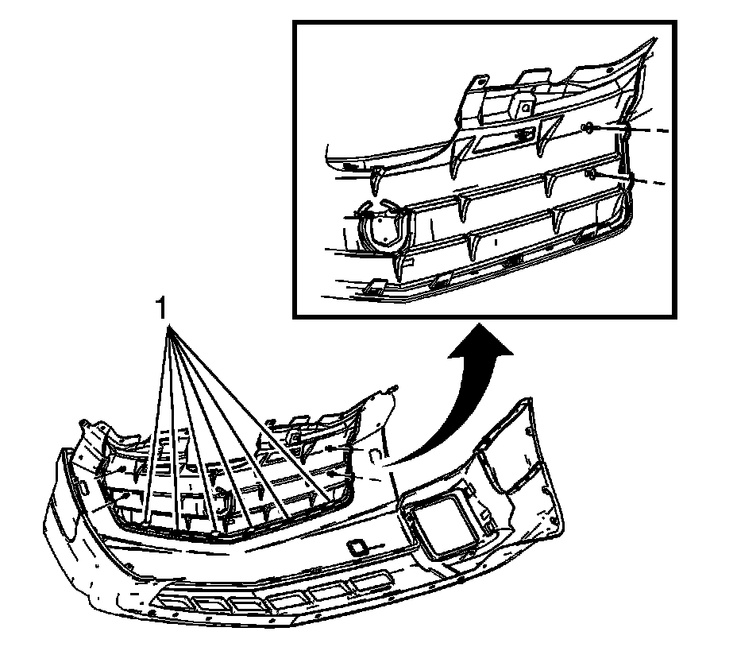

Radiator Upper Grille Replacement (Base)
Radiator Upper Grille Replacement (Base)
Removal Procedure
1. Remove the upper fasteners from the front bumper fascia to form enough slack to pull backwards and access the grille. Refer to Front Bumper Fascia Replacement (Front Bumper Fascia Replacement) .

2. Remove the push-in retainers (1) that hold the grille to the fascia.
3. Disengage the headlamp washer hose from the upper radiator grille tabs.
4. Disengage the clips from the fascia at the bottom of the grille.
5. Remove the grille from the fascia.
Installation Procedure
1. Position the grille to the fascia, using the clips as guides to the pilot holes in the fascia.
2. Install the push-in retainers (1) that hold the grille to the fascia.
3. Install the headlamp washer hose to the grille tabs.
4. Position the fascia in place and install the fasteners that were removed. Refer to Front Bumper Fascia Replacement (Front Bumper Fascia Replacement) .